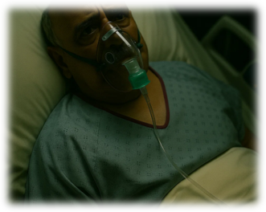

PATIENT
RECOVERY
- “Oh thank you on call physio. He’s still very sick. But he looks so much better.”
- The doctors have arrived and started some antibiotics and increased nebuliser frequency at your guidance.
- Thank you.
- You should head on and do more jobs. You’ve done a great job.”